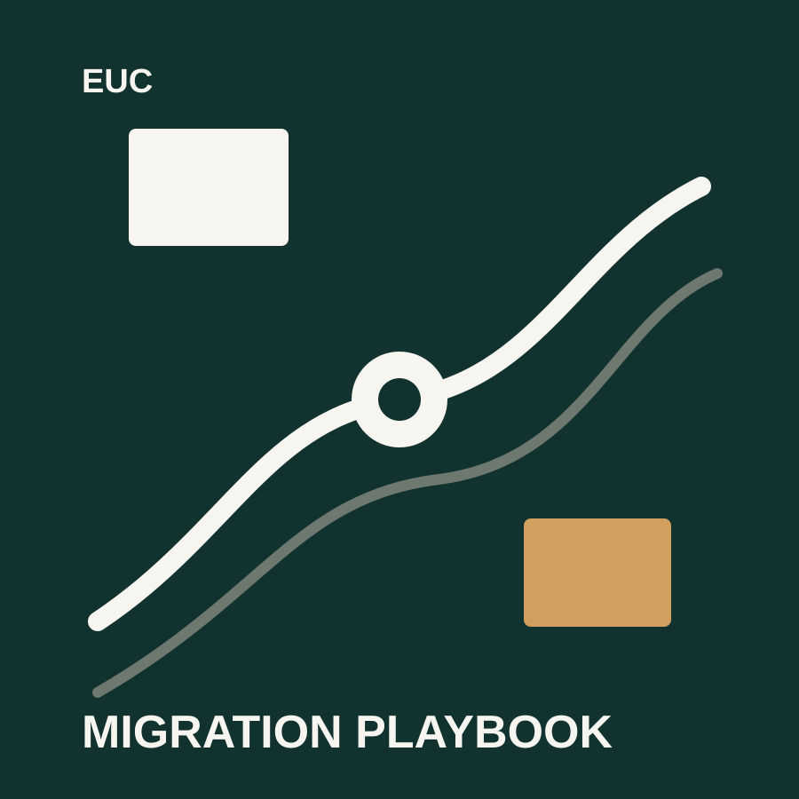
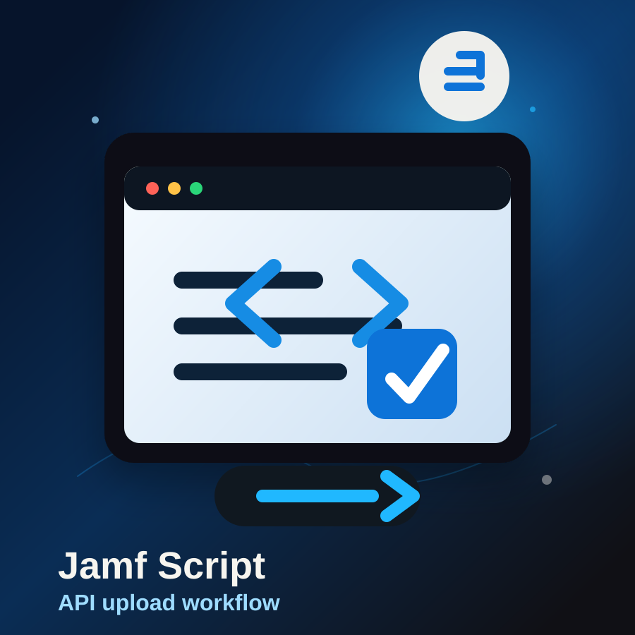
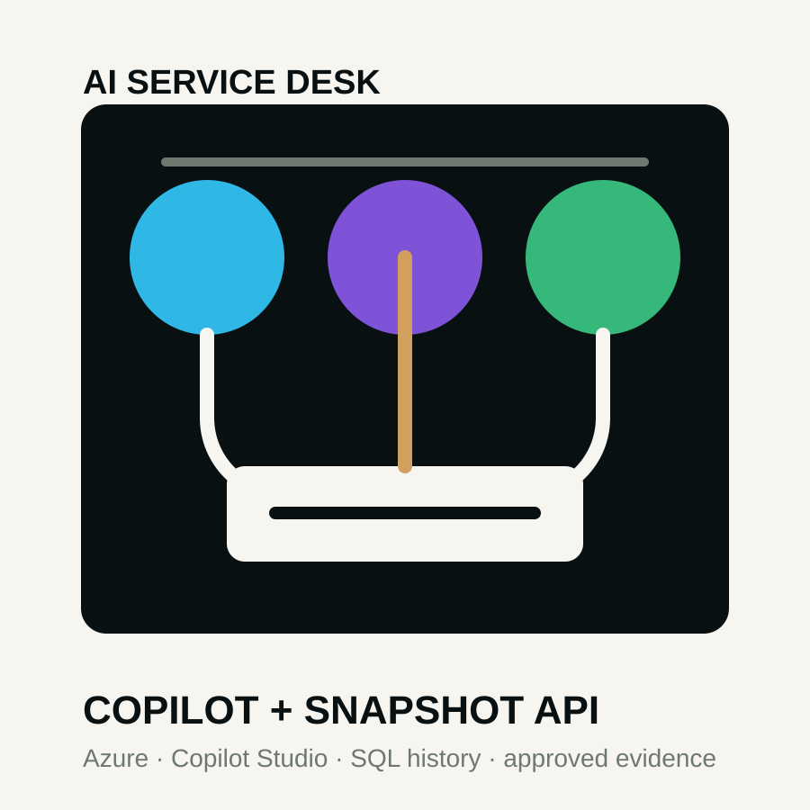
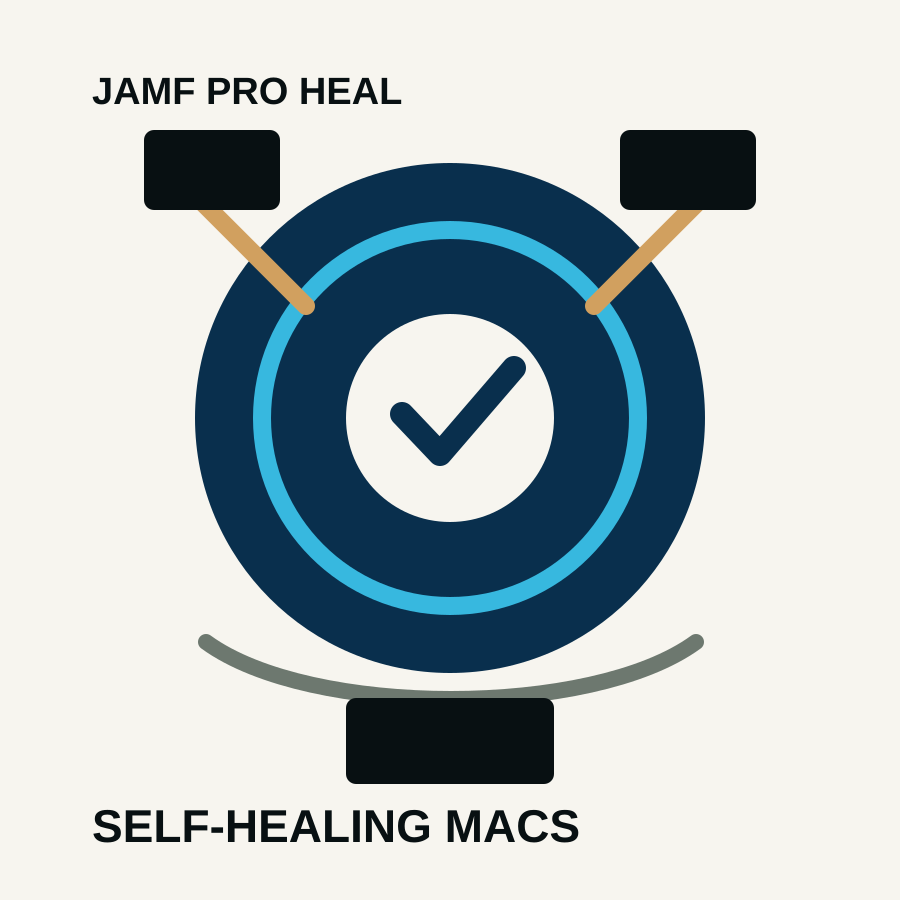
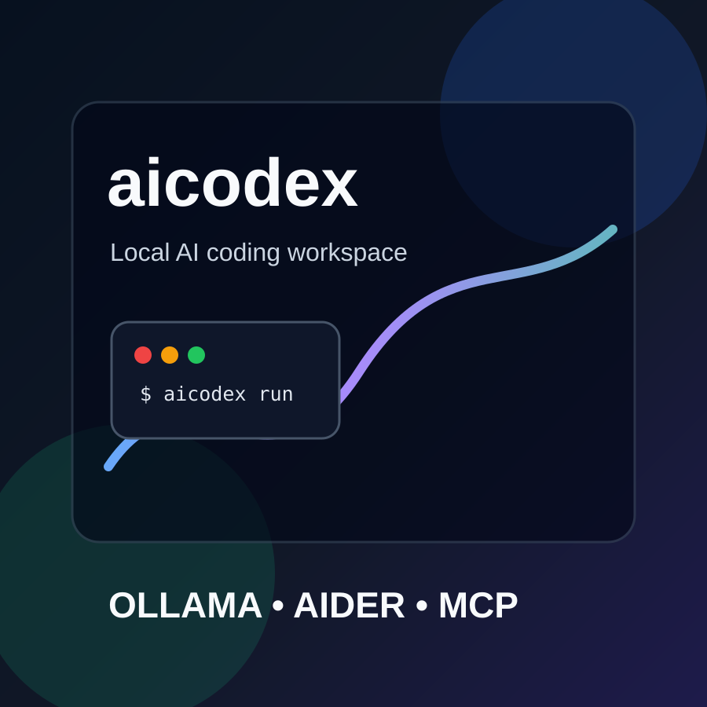
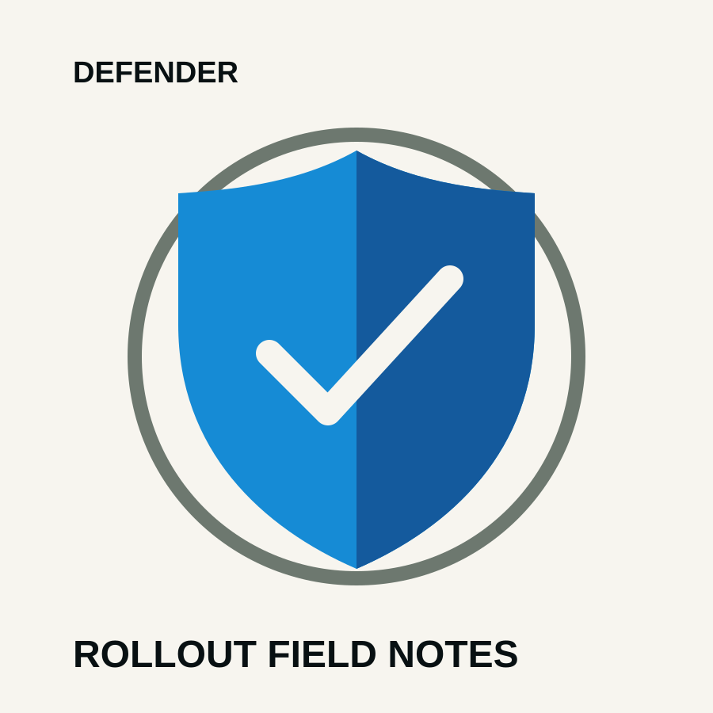

Index of articles
Articles
Notes on cloud delivery, endpoint operations, migration planning, IAM, security, and the practical decisions behind secure infrastructure work.
-

EUC Migration Playbook: Local-First macOS MDM Migration
A practical macOS MDM migration pattern using local assets, launchd monitoring, Swift Dialog, FileVault key handoff, bootstrap token escrow, and user-state validation.
Open article→ -

Jamf Script Uploader: API-Safe Script Deployment for Jamf Pro
A macOS shell utility for uploading scripts to Jamf Pro with OAuth client credentials, validation, timestamped names, and safer secret handling.
Open article→ -

AI Service Desk + Infrastructure Snapshot Platform
A Microsoft Azure starter architecture for a Copilot-powered Level 1 service desk that reads approved knowledge and normalized infrastructure snapshots.
Open article→ -

JAMF Pro Heal: A Safer Self-Healing Workflow for Managed Macs
A production-style Jamf Pro self-heal design that separates network issues from local Jamf/MDM failures before asking users to approve repair.
Open article→ -

Building a Local Codex-Like AI Coding Workspace on Mac
A practical look at aicodex: a local-first Mac setup using Ollama, Aider, Open WebUI, smart routing, safe MCP tools, Git hygiene, and project memory.
Open article→ -

AWS IAM Access Guardrails
A short guide for thinking through least privilege, access reviews, SSO, SCIM, and identity controls in AWS environments.
Open article→ -

Defender Rollout Field Notes
Operational notes for deployment rings, exclusions, alert ownership, and the handover rhythm behind endpoint security rollout.
Open article→